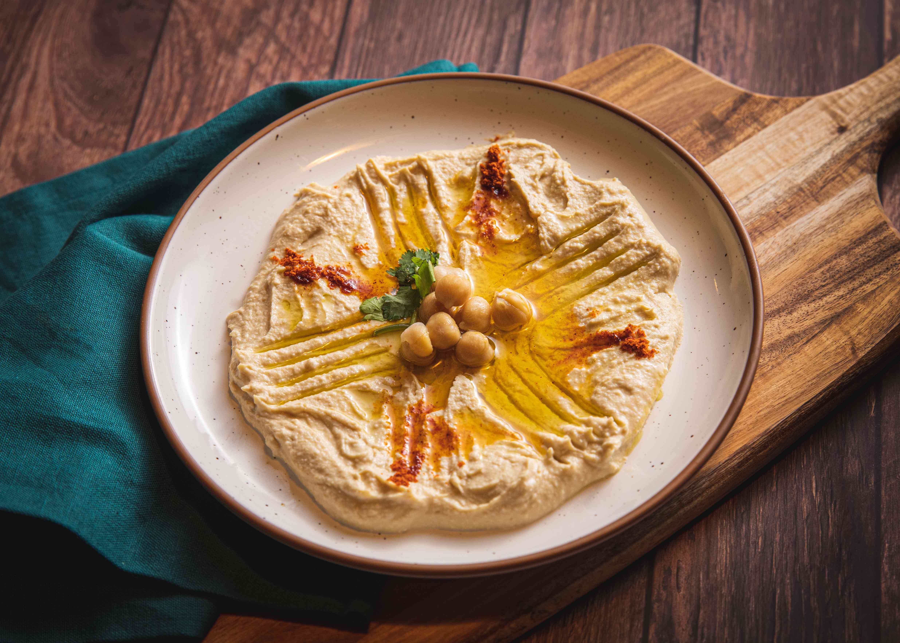

HUMMUS

description
a middle eastern dip, spread, or savory dish made from cooked, mashed chickpeas blended with tahini, lemon juice, and garlic
ingredients
- 500g can chickpeas
- ½ teaspoon baking soda
- 6 tablespoons tahini
- 3 tablespoons lemon juice
- 4 ice cubes
- 2 cloves garlic
- ¾ teaspoon salt
- ¼ teaspoon cumin
- 1 - 2 tablespoons water
steps
- drain the chickpeas and rinse them well. add the chickpeas and baking soda to a medium pot and cover with
water. bring to a boil and continue to boil for 20 minutes until the chickpeas are super tender and some
chickpea skins are floating in the water
- drain and rinse well with cold water to cool down the chickpeas. the chickpeas will be falling apart and
many of the skins will have come off
- add the cooled chickpeas along with any chickpea skins to a blender. add the tahini, lemon juice, ice cubes,
garlic, salt, and cumin. blend, stopping to scrape down the sides as needed, until completely smooth and
creamy. if needed, you can add 1 tablespoon of water at a time until you reach your desired consistency
- pour into a bowl or serving dish and enjoy plain or garnish with any optional toppings and serve with your
favorite dipper. store in an air-tight container in the fridge for up to 7 days. the hummus will get even
more flavorful overnight in the fridge
Back